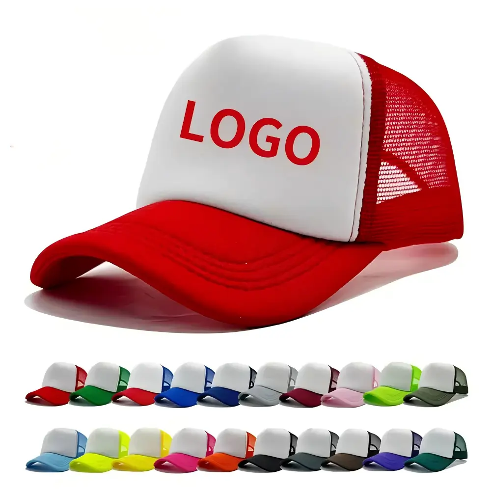
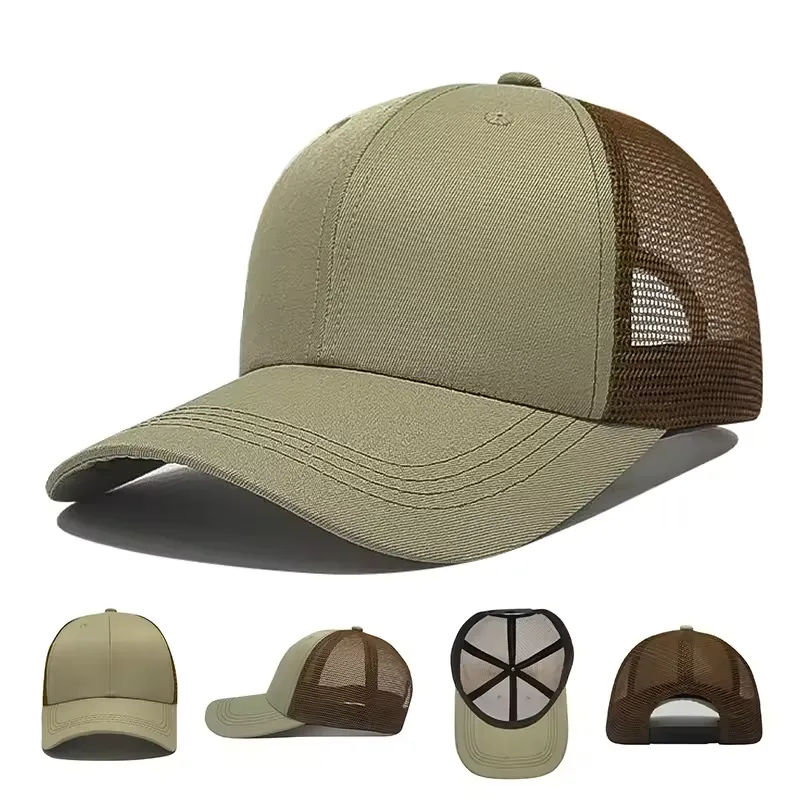
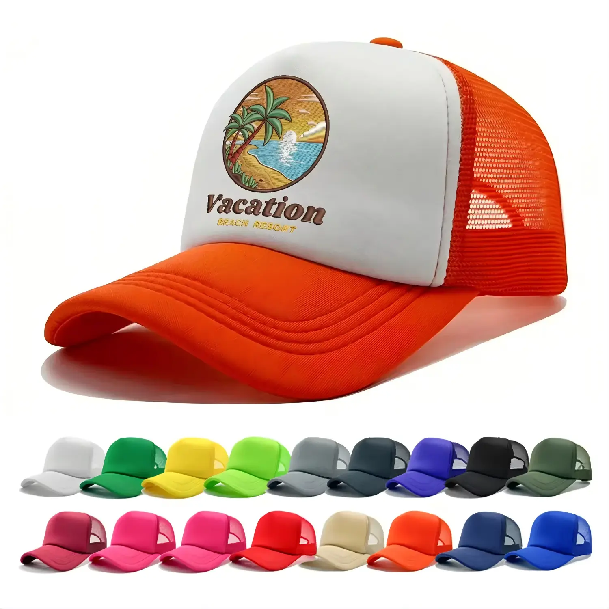
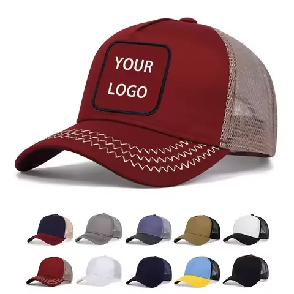

Brands
Trucker merchandise collections with an agreed fit, logo and color assortment.
Custom trucker hats · Bulk production
Custom trucker hats for brands, promotional product companies and wholesale buyers. Choose the construction, front-panel material, mesh, colors, closure and logo details before production.
Send total quantity, quantity per color, artwork, delivery country and required delivery date.

Who we work with
This service is designed primarily for bulk custom projects. Custom trucker hats for bulk orders are specified for a buying program, an approved logo and a planned delivery.
Trucker merchandise collections with an agreed fit, logo and color assortment.
Client campaigns requiring bulk trucker hats with logo and repeatable specifications.
Employee kits, dealer programs and branded headwear for multi-site teams.
Volume sourcing with documented construction, packing and assortment requirements.
Club, supporter and tournament projects with quantities split by approved colorway.
Sponsor merchandise, staff caps and participant packs planned around an event date.
Custom trucker hat options
Choose the construction before selecting decoration. These examples show different front-panel layouts; the final specification is confirmed for your order.
A broad front decoration area, mesh back and curved visor for promotional programs.

A center-seam front, mesh back and curved visor. Review logo placement around the front seam.

A fabric front with mesh back, shown here with a curved visor and contrasting colors.
Product images illustrate available styles and decoration areas; they are not presented as named customer projects or third-party brand affiliations.
Materials & construction
For a custom trucker hat manufacturer, a reference image is a starting point. The quote and approved sample should record the actual construction.
| Panel layout | 5-panel foam or fabric front; 6-panel fabric front. Confirm seam positions, crown profile and structure using your reference and sample. |
|---|---|
| Front materials | Foam-front and cotton / polyester fabric-front options can be reviewed against the selected style. Composition and surface finish are confirmed in the specification. |
| Mesh back | Confirm mesh appearance, color and its connection to the front panels. Mesh composition is specified for the project rather than assumed from a photograph. |
| Visor | Curved visors are shown in the range. Confirm shape, top and underside colors and stitching. Send a reference for any different visor requirement before quotation. |
| Sweatband & interior | Include fit, sweatband, internal seams and label requirements in the brief. Final components are confirmed through sampling. |
Closure options
Logo & decoration
The front panel is normally the primary decoration area. Mesh construction may limit some methods. Artwork, material, seams and crown shape determine the final recommendation.
Review detail, stitch coverage, thread colors and placement. Raised embroidery depends on a suitable design and front construction.

Woven, printed and leather-style patch options are reviewed for artwork, attachment and front-panel compatibility.
Screen print or heat transfer can be reviewed for the selected front material. Confirm the print area and appearance through the sample rather than applying one method to every construction.
Send the design and reference views so we can review decoration feasibility.
Custom colors
Define front panel, mesh and visor colors together. Include contrast combinations, stitching and closure color preferences so the full hat can be reviewed.
Bulk Order Planning
We primarily support bulk production programs, with project quantities commonly starting around 500 pieces. Final requirements depend on construction, color split, decoration and packaging.
Share the expected quantity and breakdown by style, colorway and logo. Material availability and the proposed assortment are reviewed together.
Include artwork, the preferred logo method and packing requirements so each is accounted for in the quote.
Send the delivery country and required delivery date. Sample revisions, production and freight are planned around your project.
Sample Approval & Batch QC
The approved sample and recorded specification provide the reference for the production run and batch checks.
Review panels, mesh, visor, closure and agreed dimensions on the pre-production sample.
Confirm decoration size, placement, execution and component colors. Record adjustments before approving the sample.
Check assembly, decoration, color and finishing against the approved reference before packing.
Packing & Delivery Preparation
Confirm the packing plan during quotation so the assortment and shipping information stay aligned.
Agree on carton quantities, color assortments and shipping marks.
Specify polybags, labels, hangtags, barcodes or custom packaging when required; the solution and cost are confirmed in the quote.
Check packing counts, destination splits and shipment arrangements before dispatch.
Need to compare other hat types? See Bulk Custom & Promotional Hats for broader production programs.
B2B applications
One hat type, different buying needs: set the design, audience and distribution plan before choosing a construction.
Branded merchandise with consistent colors and logos for your own distribution.
Campaign hats, staff kits and dealer programs with decoration suited to the artwork and budget.
Supporter, sponsor and participant projects with agreed color splits and delivery dates.
Buyer FAQ
Project quantities commonly start around 500 pieces. Final MOQ depends on construction, materials, color and design splits, decoration and packaging. Send your expected quantity and assortment for confirmation; a fixed per-color minimum is not assumed.
Yes. Front panel, mesh and visor color combinations can be reviewed for your project. Include stitching and closure color preferences in the brief. Available materials and color references are confirmed before sampling; exact color matching is not assumed.
Both 5-panel foam-front and 6-panel fabric-front constructions are included in our trucker hat options. Send a front, side and back reference so panel layout, crown profile and visor shape can be confirmed for the quotation.
Flat and 3D embroidery, woven or printed patches, leather-style patches, screen printing and heat transfer can be reviewed. Front panels are normally the primary decoration area. Mesh may limit decoration, and the final method depends on artwork, material and construction.
Yes. A physical pre-production sample can be developed after the specification and artwork are confirmed. Approve the construction, colors, fit and logo execution before authorizing bulk production. Sample cost and timing are included in the project discussion.
Plastic snapback is the adjustable closure shown in the current trucker hat range. Share the requested adjustment range and closure color. A different closure must be reviewed and confirmed before it is included in the quotation.
Color splits can be reviewed for bulk custom trucker hats. Provide quantities per colorway and per logo design. Feasibility and any minimum by material or design are confirmed with the quotation, rather than assumed from the total order quantity.
Send your company, contact details, delivery country, total quantity and quantity per color or style, construction reference, logo artwork or reference link, preferred decoration, packaging and required delivery date. Include a budget target if you want alternatives compared.
Standard bulk packing and shipping cartons can be planned against the agreed assortment. Individual polybags, inside labels, hangtags, barcodes and custom packaging requirements should be specified before quotation. Packing and carton counts are confirmed before shipment.
Timing depends on construction, material availability, number of colorways, artwork, sample revisions, production season, packaging and freight. Send the delivery country and required delivery date. Sampling, production and shipment timing will be confirmed for your project, with no generic fixed delivery promise.
Yes. Custom trucker hats wholesale projects are reviewed for promotional distributors, wholesalers and brands ordering in volume. An approved specification and sample define what is repeated across the bulk order.
Request a Quote
Share the expected quantity, color / style split, artwork and required delivery date. Front, side and back references help us review construction before quoting.
Send artwork by email: sales@nacohats.com
Share your reference and specification in Project details so we can review construction, cost and timing.